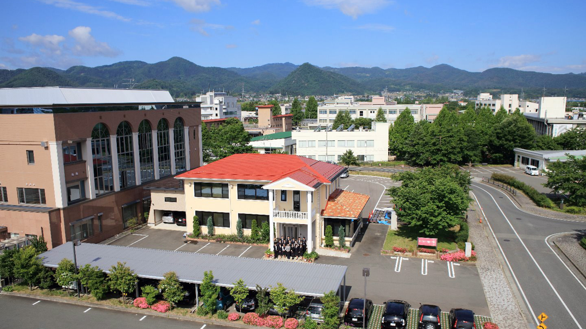
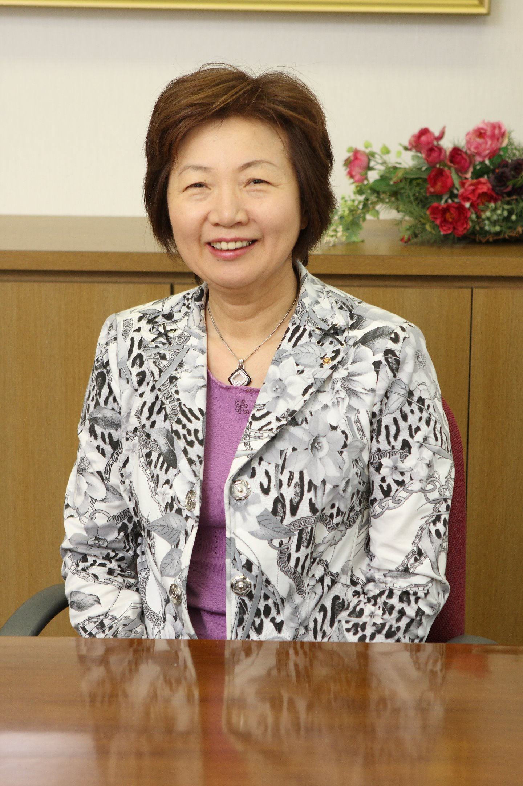
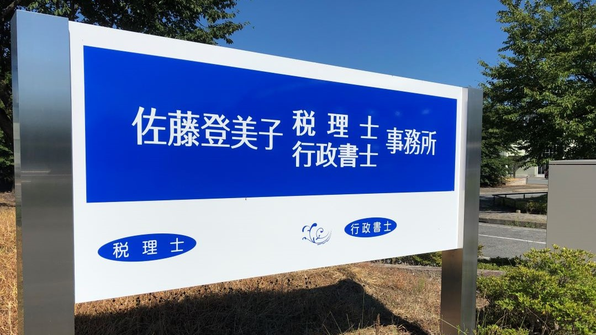
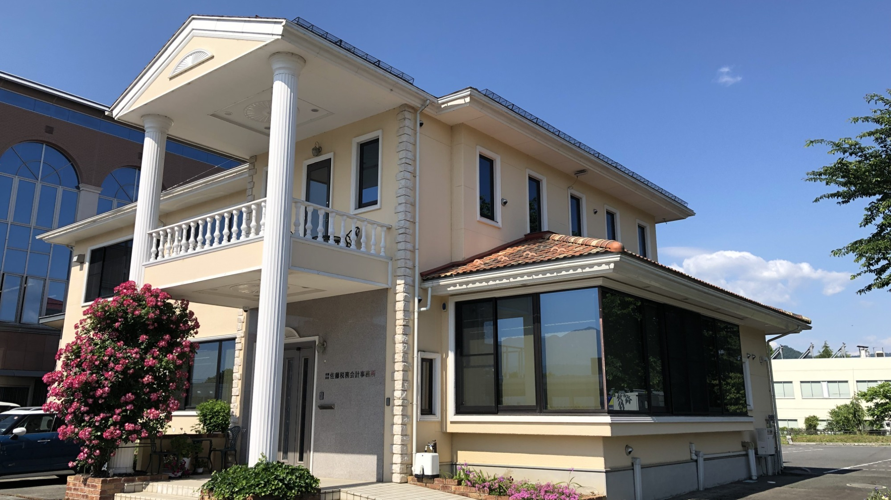
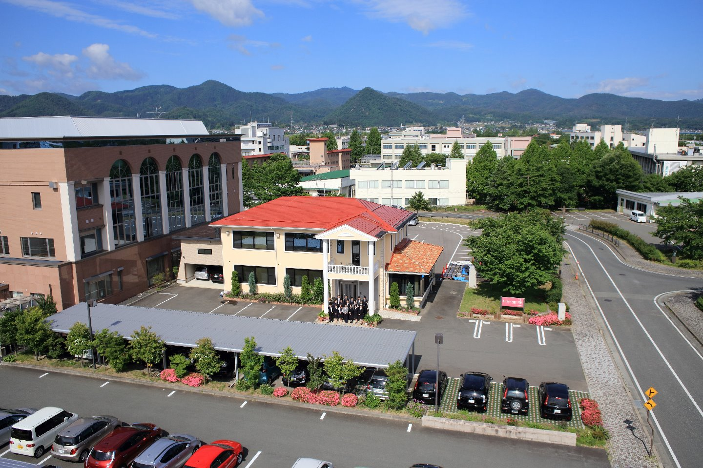

記帳指導
原則、毎月1回訪問し、記帳指導をさせて頂きます。会計ソフトの導入を検討しておられる場合には、選定から操作指導に至るまで丁寧にアドバイスさせて頂きます。


我が事務所は、租税正義の実現と、顧問先企業の健全な発展の為、前向き積極的にその持てる全精力を傾注し、依って全ての社員が、誇りと希望の持てる超一流の会計事務所を実現することを、永続的に追求します。
私は昭和58年に税理士事務所を開設してから今日まで、多方面の顧問先のお客様と信頼の絆を築いていくことを重点においてきました。
税務、会計はもちろん他の些細なことでもお悩みごとがございましたらお気軽に当事務所までご相談下さい。プライバシーを守り、一生懸命お客様に満足していただくように努力させていただきます。
“築こう未来を先見の眼と行動力で”
ＴＫＣ全国会の基本理念である「自利利他」について、ＴＫＣ全国会創設者飯塚毅は次のように述べています。
仏教哲学の精髄は「相即の論理」である。般若心経は「色即是空」と説くが、それは「色」を滅して「空」に至るのではなく、「色そのままに空」であるという真理を表現している。
同様に「自利とは利他をいう」とは、「利他」のまっただ中で「自利」を覚知すること、すなわち「自利即利他」の意味である。他の説のごとく「自利と、利他と」といった並列の関係ではない。
そう解すれば自利の「自」は、単に想念としての自己を指すものではないことが分かるだろう。それは己の主体、すなわち主人公である。
また、利他の「他」もただ他者の意ではない。己の五体はもちろん、眼耳鼻舌身意の「意」さえ含む一切の客体をいう。
世のため人のため、つまり会計人なら、職員や関与先、社会のために精進努力の生活に徹すること、それがそのまま自利すなわち本当の自分の喜びであり幸福なのだ。
そのような心境に立ち至り、かかる本物の人物となって社会と大衆に奉仕することができれば、人は心からの生き甲斐を感じるはずである。
お客様の繁栄は、私たちの喜びです。
ご発展の秘訣は良きアドバイザーに巡り会うことと自負しております。
私たちは最善のノウハウによって、お客様の成長を積極的にサポートいたします。
原則、毎月1回訪問し、記帳指導をさせて頂きます。会計ソフトの導入を検討しておられる場合には、選定から操作指導に至るまで丁寧にアドバイスさせて頂きます。
現金出納帳、伝票、給与台帳などの資料をお客様の方で作成していただき、当社で会計ソフトへ入力し、仕訳日記帳、月次試算表、総勘定元帳、貸借対照表、損益計算書などの書類を作成いたします。
当方のスタッフもご一緒させていただき、本来支払うべき税金以上に請求されることがないよう、また、問題を指摘された場合の調整代行をいたします。
決算指導及び、税務署、都道府県、市町村提出用の各種申告書を作成いたします。
当事務所は地域の会計事務所の中にあって
存在感のある専門家グループを目指しています！！
医業経営コンサルタント・社会福祉簿記検定合格者が、病院・診療所・社会福祉法人の皆様を支援しています。
農業経営コンサルタントおよび農業簿記検定 2 級合格者15名体制で、山形県酪農業協同組合青色申告会の支援事務所を務めています。
相続・事業承継・資産税対策を中心に、経営者様と個人のお客様の財産運用を支援します。
3. 当事務所は山形県酪農業協同組合青色申告会の支援事務所です。



・開催日：11月15日(金) 14:00〜
・開催場所：パレスグランデール（〒990-2432 山形市荒楯町1-17-40）
・研修内容：①今年の税制改正について／②電子納税・クラウドシステム
・特別講演：勝手に！オネーサン
申込用紙を監査担当者に直接渡して頂くか、FAX若しくは電話でも受け付けております。締切日は10月25日(金)までとなっております。
今回の旬の内容は来月より施行される社会保険の対象者の改正についてです。また、山形県では来月10月19日より最低賃金が900円→955円に引き上げられます。人件費の増加に伴い、経費の見直しを行い、余分な経費を減らしていくのも必要だと感じます。
そのほか、ふぁ～ま～ず通信(農業)、医業版旬、資産税旬 各種更新しておりますのでご覧ください。
税務、会計はもちろん他の些細なことでもお悩みごとがございましたら、お気軽に当事務所までご相談下さい。プライバシーを守り、一生懸命お客様に満足していただくように努力させていただきます。